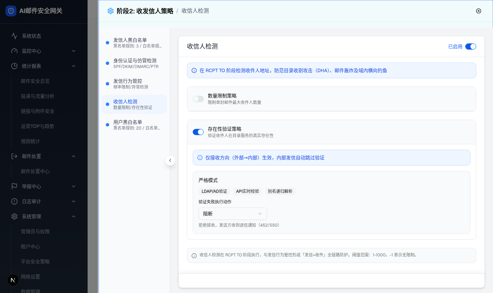
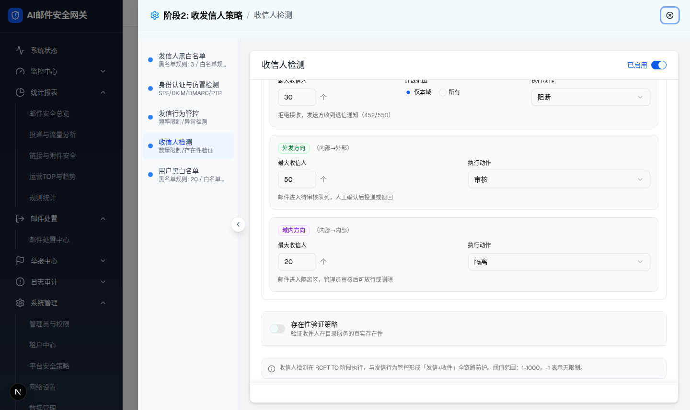
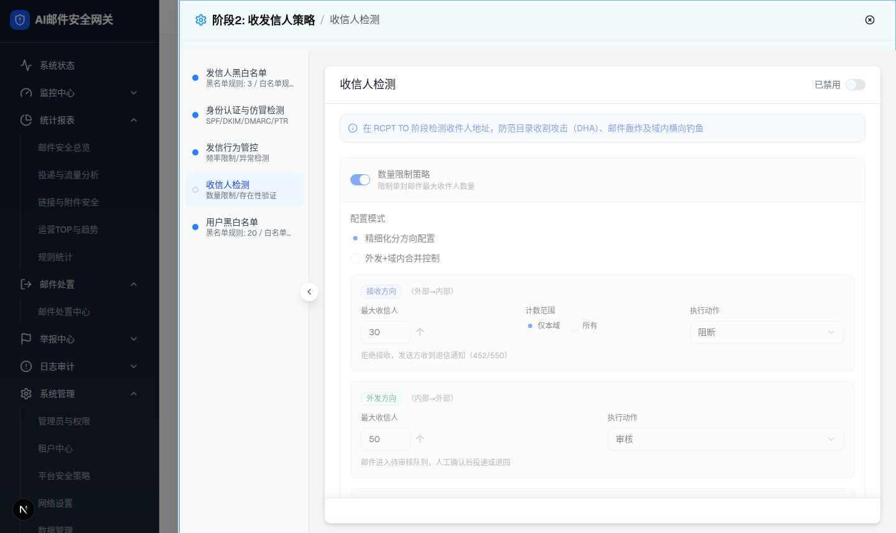
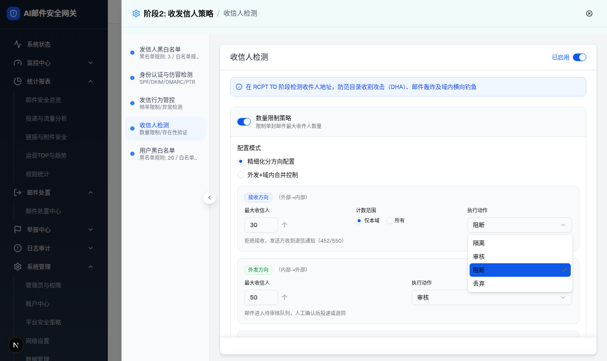

| 所属组件 | 2.2 收信人检测配置面板 renderRecipientCheckConfig |
| 主文件 | index.html |
| 触发路径 | 层级1 抽屉默认态 → ①关闭“数量限制策略”开关；②关闭“存在性验证策略”开关；③关闭面板头模块开关；④点击任一“执行动作”下拉 |
| 截图 | drawer-limit-disabled.png / drawer-existence-disabled.png / drawer-module-disabled.png / drawer-action-select-open.png |
| DOM 提取 | 三态开关矩阵、区块 body 卸载证据（radio/combobox/input 数量变化）、灰化 wrapper class、下拉 option 清单均取自浏览器实测。 |

| 比对项 | demo 实际 DOM | 提取的 HTML | 是否一致 |
|---|---|---|---|
| 开关矩阵 | [模块 checked, 数量限制 unchecked, 存在性验证 checked] | 预览开关 aria-checked=false | 一致 |
| body 卸载证据 | radio 0 个、number input 0 个、combobox 仅剩 1 个（存在性验证的“阻断”）；“配置模式”文本消失 | body 加 is-hidden（卸载等价展示） | 一致 |
| 头部保留 | 标题/副标题/开关仍渲染，无灰化 | 同结构 | 一致 |

| 比对项 | demo 实际 DOM | 提取的 HTML | 是否一致 |
|---|---|---|---|
| 开关矩阵 | [模块 checked, 数量限制 checked, 存在性验证 unchecked] | 预览开关 aria-checked=false | 一致 |
| body 卸载证据 | “严格模式”文本消失；combobox 由 4 减为 3；数量限制区 radio/input 不受影响（4 radio / 3 input） | body 加 is-hidden | 一致 |
左侧导航状态圆点联动：启用 → 禁用 变空心灰。

| 比对项 | demo 实际 DOM | 提取的 HTML | 是否一致 |
|---|---|---|---|
| 开关矩阵 | [模块 unchecked, 数量限制 checked, 存在性验证 checked]（内部开关状态保留） | 预览仅模块开关切换，正文说明内部开关不变 | 一致 |
| 灰化 wrapper | div.space-y-6.opacity-50.pointer-events-none（内容不卸载：radio 4 / input 3 / combobox 4 仍在） | .module-content.off opacity .5 + pointer-events none | 一致 |
| 状态字 | “已禁用”（灰色），启用时“已启用”（蓝色） | 同文案同配色逻辑 | 一致 |
| 导航圆点 | 由 bg-blue-500 变 border-2 border-gray-300 空心 | .nav-dot-demo.off | 一致 |
拒绝接收，发送方收到退信通知（452/550）

| 比对项 | demo 实际 DOM | 提取的 HTML | 是否一致 |
|---|---|---|---|
| 选项清单（顺序） | [role=option]：隔离 / 审核 / 阻断(checked) / 丢弃 | 同顺序同选中态 | 一致 |
| 选中标识 | data-state=checked，蓝底白字+勾 | .fake-option.checked 蓝底白字+✓ | 一致 |
| 切换联动 | 选“丢弃”后 combobox 值变“丢弃”，说明变“静默丢弃，发送方无感知，无退信” | 预览点选后触发同文案联动 | 一致 |
| 动作说明全集 | 隔离=进隔离区待审 / 审核=待审核队列 / 阻断=退信452/550 / 丢弃=静默丢弃无退信 | 同映射（getActionDescription） | 一致 |
| 序号 | 元素 | 状态变化 | 恢复方式 | 跳转层级 |
|---|---|---|---|---|
| 1 | 数量限制策略 Switch | 关闭 → 区块 body 卸载（值保留于 state） | 再次开启原样恢复 | → 层级1 |
| 2 | 存在性验证策略 Switch | 关闭 → 区块 body 卸载 | 再次开启原样恢复 | → 层级1 |
| 3 | 模块启用 Switch（面板头） | 关闭 → 已禁用 + 全区灰化不可点 + 导航圆点空心；内部开关状态不变 | 再次开启恢复交互 | → 层级1 |
| 4 | 执行动作 Select（×4 处） | 展开 4 项菜单；选中项高亮打勾；切换后说明文案联动 | Escape/点外部关闭 | 本层内 |